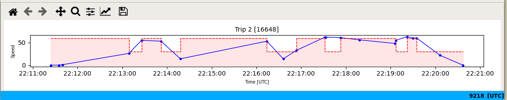

The Speed Plot pane shows the plot of vehicle speed for the currently selected trip, and similarly, a zone change plot.
The data for the vehicle speed plot comes from log event header information for events during the trip. Note that the vehicle speed is displayed in the speed plot even if the events are configured not to be shown in the Trip Data pane.
It is important to note that while the vehicle speed plot shows a line, only the plot markers come from log data.
The plots in the Speed Plot pane use the Python https://matplotlib.org/ library. The standard matplotlib toolbar is displayed at the top of the Speed Plot pane, and can be used to perform standard functions, such as panning or zooming the plot, or to save an image of the plot.
The colours and fonts used in the plot can be set in the application configuration.